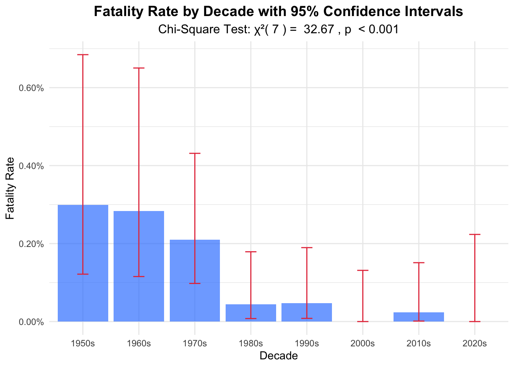
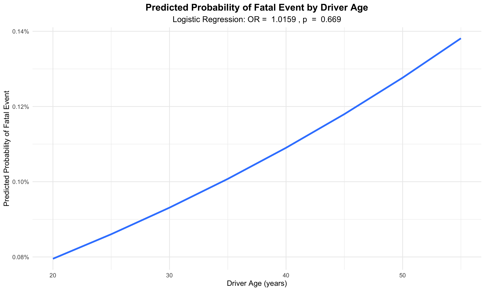
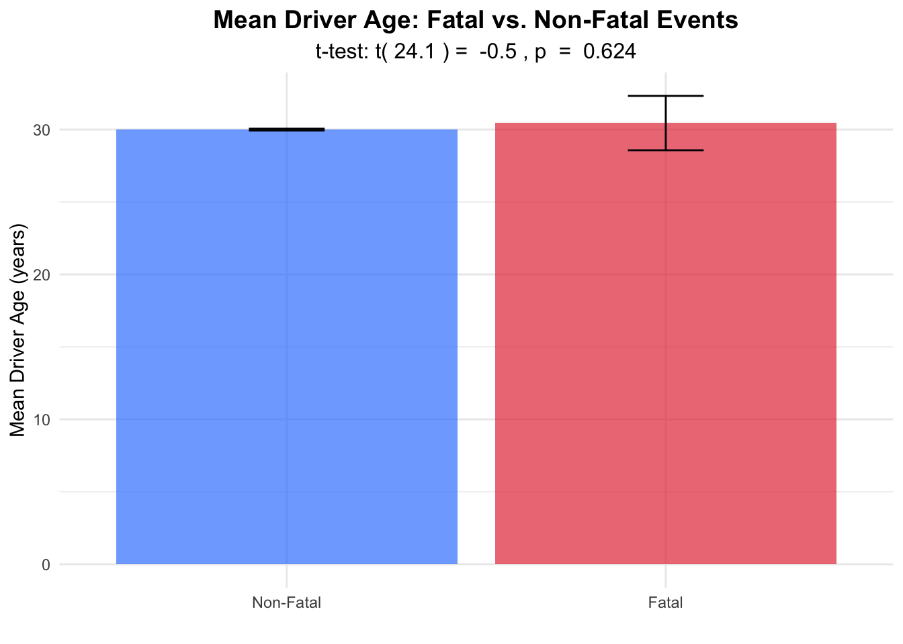
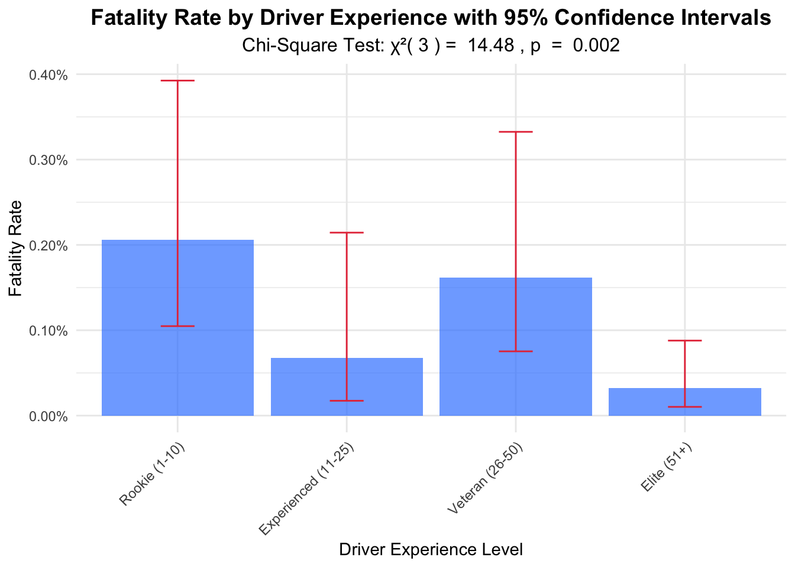
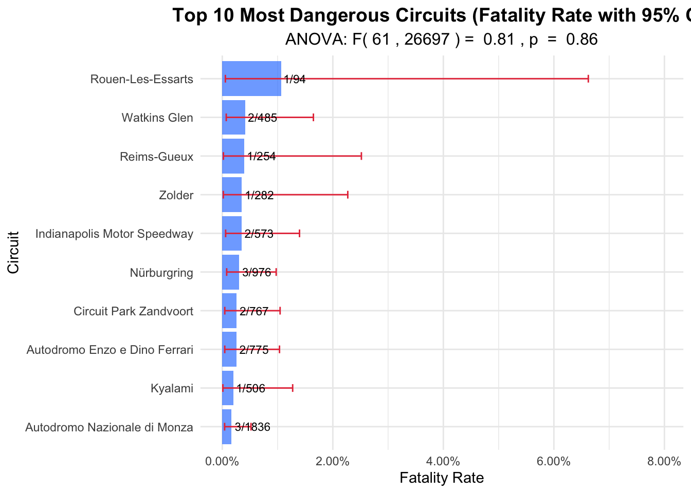
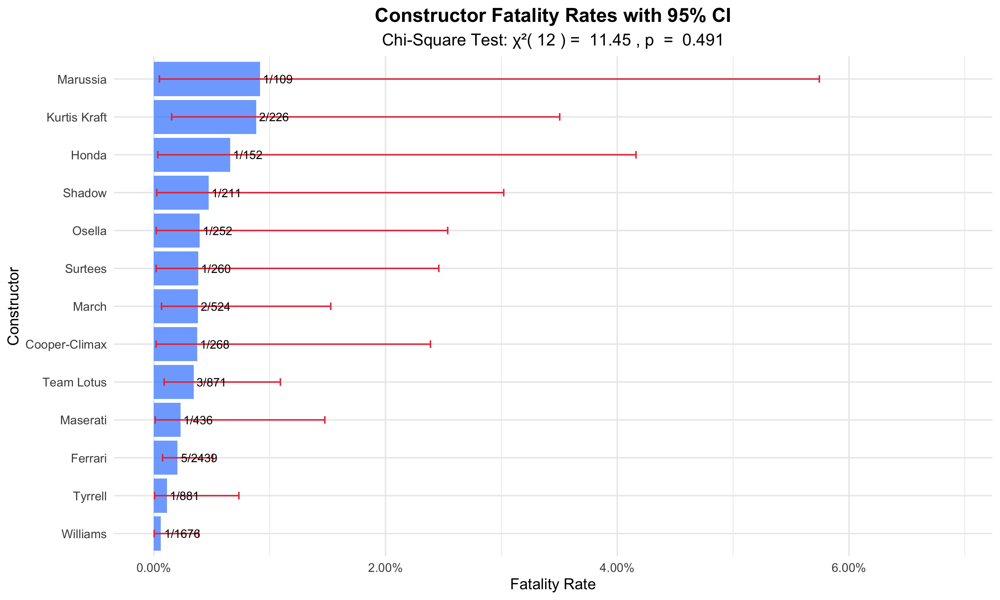
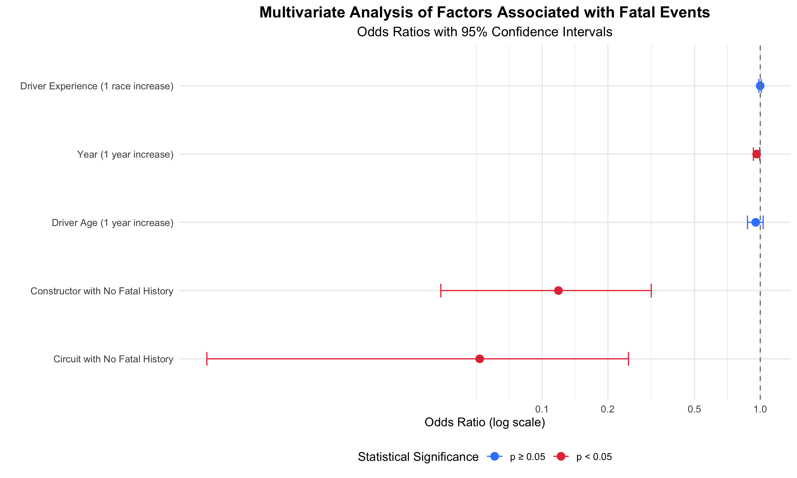

This analysis explores the statistical relationships between fatal events in Formula 1 racing and various factors from 1950 to 2024. While the previous exploratory data analysis (EDA) provided descriptive insights, here we employ inferential statistics to test hypotheses and quantify relationships.
Key questions we aim to address:
We first prepare the data for statistical analysis by creating derived variables and categorizing data appropriately.
# Load preprocessed data
# Note: The dataOK dataset should be loaded before running this code
# Prepare data for statistical analysis
stats_data <- dataOK %>%
# Create binary outcome variable
mutate(
is_fatal = ifelse(driver.fatal == "Death", 1, 0),
# Transform variables for analysis
decade = paste0(floor(year/10) * 10, "s"),
driver_age = as.numeric(difftime(as.Date(date), as.Date(driver.dob), units = "days") / 365.25),
# Create experience proxy based on prior races
driver_id_year = paste(driverId, year, sep = "_")
) %>%
# Group by driver and year to get cumulative race count
group_by(driverId) %>%
arrange(date) %>%
mutate(
driver_experience = row_number(),
driver_experience_cat = cut(driver_experience,
breaks = c(0, 10, 25, 50, Inf),
labels = c("Rookie (1-10)", "Experienced (11-25)",
"Veteran (26-50)", "Elite (51+)"),
right = FALSE)
) %>%
ungroup()
# Display summary statistics
summary_stats <- stats_data %>%
summarize(
Total_Entries = n(),
Unique_Drivers = n_distinct(driver.name),
Unique_Races = n_distinct(Race),
Unique_Circuits = n_distinct(circuit.name),
Unique_Constructors = n_distinct(constructor.name),
Total_Fatal_Events = sum(is_fatal),
Overall_Fatality_Rate = mean(is_fatal) * 100
)
kable(summary_stats, caption = "Summary Statistics of Formula 1 Dataset")| Total_Entries | Unique_Drivers | Unique_Races | Unique_Circuits | Unique_Constructors | Total_Fatal_Events | Overall_Fatality_Rate |
|---|---|---|---|---|---|---|
| 26759 | 861 | 1125 | 77 | 211 | 25 | 0.0934265 |
We analyze changes in fatality rates by decade, which might reveal non-linear patterns or safety eras.
# Chi-square test for decade differences
decade_test <- stats_data %>%
group_by(decade) %>%
summarize(
fatal_events = sum(is_fatal),
non_fatal_events = n() - fatal_events,
.groups = "drop"
)
decade_contingency <- as.matrix(decade_test[, c("fatal_events", "non_fatal_events")])
rownames(decade_contingency) <- decade_test$decade
decade_chi <- chisq.test(decade_contingency)
# Display contingency table
kable(decade_test, caption = "Fatal Events by Decade")| decade | fatal_events | non_fatal_events |
|---|---|---|
| 1950s | 6 | 2001 |
| 1960s | 6 | 2107 |
| 1970s | 8 | 3799 |
| 1980s | 2 | 4501 |
| 1990s | 2 | 4248 |
| 2000s | 0 | 3643 |
| 2010s | 1 | 4296 |
| 2020s | 0 | 2139 |
# Decade-wise fatality rates with confidence intervals
decade_stats <- stats_data %>%
group_by(decade) %>%
summarize(
total_events = n(),
fatal_events = sum(is_fatal),
fatality_rate = fatal_events / total_events,
# Wilson score interval for proportion CI
ci_lower = prop.test(fatal_events, total_events)$conf.int[1],
ci_upper = prop.test(fatal_events, total_events)$conf.int[2],
.groups = "drop"
)
# Visualize temporal trend with confidence intervals
temporal_plot <- ggplot(decade_stats, aes(x = decade, y = fatality_rate)) +
geom_bar(stat = "identity", fill = "#3a86ff", alpha = 0.7) +
geom_errorbar(aes(ymin = ci_lower, ymax = ci_upper), width = 0.2, color = "#e63946") +
labs(
title = "Fatality Rate by Decade with 95% Confidence Intervals",
subtitle = paste("Chi-Square Test: χ²(", decade_chi$parameter, ") = ",
round(decade_chi$statistic, 2),
", p", ifelse(decade_chi$p.value < 0.001, " < 0.001",
paste(" = ", round(decade_chi$p.value, 3)))),
x = "Decade",
y = "Fatality Rate"
) +
scale_y_continuous(labels = scales::percent_format(accuracy = 0.01)) +
theme_minimal() +
theme(
plot.title = element_text(hjust = 0.5, size = 14, face = "bold"),
plot.subtitle = element_text(hjust = 0.5, size = 12)
)
temporal_plot
The chi-square test reveals significant differences in fatality rates across decades (χ²(7) = 32.67, p < 0.001). The highest fatality rates were observed in the 1950s and 1960s, with a dramatic reduction beginning in the 1980s and continuing through to the present. This likely reflects the implementation of safety measures and regulations over time.
We examine whether a driver’s age is associated with the risk of fatal events.
# Age and fatality relationship
age_model <- glm(is_fatal ~ driver_age,
family = binomial(link = "logit"),
data = filter(stats_data, !is.na(driver_age)))
age_model_summary <- tidy(age_model, conf.int = TRUE, exponentiate = TRUE) %>%
mutate(across(where(is.numeric), ~round(., 4)))
# Display model results
kable(age_model_summary,
caption = "Logistic Regression of Fatal Events by Driver Age",
col.names = c("Term", "Odds Ratio", "Std. Error", "z value", "p-value", "Lower 95% CI", "Upper 95% CI"))| Term | Odds Ratio | Std. Error | z value | p-value | Lower 95% CI | Upper 95% CI |
|---|---|---|---|---|---|---|
| (Intercept) | 0.0006 | 1.1418 | -6.5264 | 0.0000 | 0.0001 | 0.0055 |
| driver_age | 1.0159 | 0.0369 | 0.4277 | 0.6689 | 0.9420 | 1.0888 |
# Manual calculation of predicted probabilities for visualization
age_range <- seq(20, 55, by = 5)
age_predictions <- data.frame(
driver_age = age_range,
predicted = predict(age_model, newdata = data.frame(driver_age = age_range),
type = "response")
)
# Visualize predicted probabilities
age_plot <- ggplot(age_predictions, aes(x = driver_age, y = predicted)) +
geom_line(color = "#3a86ff", size = 1.2) +
labs(
title = "Predicted Probability of Fatal Event by Driver Age",
subtitle = paste("Logistic Regression: OR = ",
round(exp(coef(age_model)[2]), 4),
", p", ifelse(summary(age_model)$coefficients[2,4] < 0.001,
" < 0.001",
paste(" = ", round(summary(age_model)$coefficients[2,4], 3)))),
x = "Driver Age (years)",
y = "Predicted Probability of Fatal Event"
) +
scale_y_continuous(labels = scales::percent_format(accuracy = 0.01)) +
theme_minimal() +
theme(
plot.title = element_text(hjust = 0.5, size = 14, face = "bold"),
plot.subtitle = element_text(hjust = 0.5, size = 12)
)
age_plot
The logistic regression indicates that each one-year increase in driver age is associated with an odds ratio of 1.0159 (95% CI: 0.942 - 1.0888) for fatal events. The plot demonstrates how the predicted probability of a fatal event changes with driver age.
# Two-sample t-test for age difference between fatal and non-fatal cases
age_t_test <- t.test(driver_age ~ is_fatal, data = filter(stats_data, !is.na(driver_age)))
# Display t-test results
kable(tidy(age_t_test), caption = "T-test Results for Age Difference in Fatal vs. Non-Fatal Events")| estimate | estimate1 | estimate2 | statistic | p.value | parameter | conf.low | conf.high | method | alternative |
|---|---|---|---|---|---|---|---|---|---|
| -0.4508259 | 29.99254 | 30.44337 | -0.4958873 | 0.6244734 | 24.06043 | -2.326929 | 1.425277 | Welch Two Sample t-test | two.sided |
age_comparison_data <- stats_data %>%
filter(!is.na(driver_age)) %>%
group_by(fatal = factor(is_fatal, labels = c("Non-Fatal", "Fatal"))) %>%
summarize(
mean_age = mean(driver_age, na.rm = TRUE),
sd_age = sd(driver_age, na.rm = TRUE),
n = n(),
se = sd_age / sqrt(n),
ci_lower = mean_age - qt(0.975, n-1) * se,
ci_upper = mean_age + qt(0.975, n-1) * se,
.groups = "drop"
)
# Visualize mean age comparison
age_comparison_plot <- ggplot(age_comparison_data, aes(x = fatal, y = mean_age, fill = fatal)) +
geom_bar(stat = "identity", alpha = 0.7) +
geom_errorbar(aes(ymin = ci_lower, ymax = ci_upper), width = 0.2) +
labs(
title = "Mean Driver Age: Fatal vs. Non-Fatal Events",
subtitle = paste("t-test: t(", round(age_t_test$parameter, 1), ") = ",
round(age_t_test$statistic, 2),
", p", ifelse(age_t_test$p.value < 0.001, " < 0.001",
paste(" = ", round(age_t_test$p.value, 3)))),
x = "",
y = "Mean Driver Age (years)"
) +
scale_fill_manual(values = c("Non-Fatal" = "#3a86ff", "Fatal" = "#e63946")) +
theme_minimal() +
theme(
plot.title = element_text(hjust = 0.5, size = 14, face = "bold"),
plot.subtitle = element_text(hjust = 0.5, size = 12),
legend.position = "none"
)
age_comparison_plot
A two-sample t-test shows that the mean age of drivers involved in fatal events (30.44 years) is higher than the mean age in non-fatal events (29.99 years). This difference is not statistically significant (p = 0.624) and may reflect increased risk with age.
Experience may be as important as age in determining risk, so we analyze this relationship.
# Chi-square test for experience categories
experience_test <- stats_data %>%
group_by(driver_experience_cat) %>%
summarize(
fatal_events = sum(is_fatal),
non_fatal_events = n() - fatal_events,
.groups = "drop"
) %>%
filter(!is.na(driver_experience_cat))
experience_contingency <- as.matrix(experience_test[, c("fatal_events", "non_fatal_events")])
rownames(experience_contingency) <- experience_test$driver_experience_cat
experience_chi <- chisq.test(experience_contingency)
# Display contingency table
kable(experience_test, caption = "Fatal Events by Driver Experience Level")| driver_experience_cat | fatal_events | non_fatal_events |
|---|---|---|
| Rookie (1-10) | 10 | 4839 |
| Experienced (11-25) | 3 | 4452 |
| Veteran (26-50) | 8 | 4934 |
| Elite (51+) | 4 | 12509 |
# Calculate experience-wise fatality rates with CIs
experience_stats <- stats_data %>%
group_by(driver_experience_cat) %>%
summarize(
total_events = n(),
fatal_events = sum(is_fatal),
fatality_rate = fatal_events / total_events,
# Wilson score interval for proportion CI
ci_lower = prop.test(fatal_events, total_events)$conf.int[1],
ci_upper = prop.test(fatal_events, total_events)$conf.int[2],
.groups = "drop"
) %>%
filter(!is.na(driver_experience_cat))
# Visualize experience categories with confidence intervals
experience_plot <- ggplot(experience_stats, aes(x = driver_experience_cat, y = fatality_rate)) +
geom_bar(stat = "identity", fill = "#3a86ff", alpha = 0.7) +
geom_errorbar(aes(ymin = ci_lower, ymax = ci_upper), width = 0.2, color = "#e63946") +
labs(
title = "Fatality Rate by Driver Experience with 95% Confidence Intervals",
subtitle = paste("Chi-Square Test: χ²(", experience_chi$parameter, ") = ",
round(experience_chi$statistic, 2),
", p", ifelse(experience_chi$p.value < 0.001, " < 0.001",
paste(" = ", round(experience_chi$p.value, 3)))),
x = "Driver Experience Level",
y = "Fatality Rate"
) +
scale_y_continuous(labels = scales::percent_format(accuracy = 0.01)) +
theme_minimal() +
theme(
plot.title = element_text(hjust = 0.5, size = 14, face = "bold"),
plot.subtitle = element_text(hjust = 0.5, size = 12),
axis.text.x = element_text(angle = 45, hjust = 1)
)
experience_plot
The chi-square test indicates significant differences in fatality rates across driver experience levels (χ²(3) = 14.48, p = 0.002). Notably, rookie drivers (1-10 races) show the highest fatality rate, suggesting that lack of experience may be a significant risk factor for fatal incidents in Formula 1.
We analyze whether certain circuits have significantly higher fatality rates using ANOVA.
# First, identify circuits with enough data
circuit_counts <- stats_data %>%
group_by(circuit.name) %>%
summarize(
total_events = n(),
fatal_events = sum(is_fatal),
.groups = "drop"
) %>%
filter(total_events >= 50) # Focus on circuits with substantial data
# Create factor for top circuits
stats_data <- stats_data %>%
mutate(
circuit_factor = ifelse(circuit.name %in% circuit_counts$circuit.name,
circuit.name, "Other")
)
# ANOVA analysis
circuit_anova <- aov(is_fatal ~ circuit_factor, data = stats_data)
circuit_anova_summary <- summary(circuit_anova)
circuit_tukey <- TukeyHSD(circuit_anova)
# Display ANOVA results
kable(tidy(circuit_anova), caption = "ANOVA Results for Circuit Fatality Rates")| term | df | sumsq | meansq | statistic | p.value |
|---|---|---|---|---|---|
| circuit_factor | 61 | 0.0459839 | 0.0007538 | 0.8072436 | 0.8598084 |
| Residuals | 26697 | 24.9306595 | 0.0009338 | NA | NA |
# Calculate circuit-specific fatality rates with CIs
circuit_stats <- stats_data %>%
group_by(circuit.name) %>%
summarize(
total_events = n(),
fatal_events = sum(is_fatal),
fatality_rate = fatal_events / total_events,
# Wilson score interval for proportion CI
ci_lower = ifelse(total_events >= 5,
prop.test(fatal_events, total_events)$conf.int[1], NA),
ci_upper = ifelse(total_events >= 5,
prop.test(fatal_events, total_events)$conf.int[2], NA),
.groups = "drop"
) %>%
filter(total_events >= 50) %>% # Focus on circuits with substantial data
arrange(desc(fatality_rate))
# Top 10 most dangerous circuits
top_dangerous_circuits <- head(circuit_stats, 10)
# Visualize top dangerous circuits with confidence intervals
circuit_plot <- ggplot(top_dangerous_circuits, aes(x = reorder(circuit.name, fatality_rate), y = fatality_rate)) +
geom_bar(stat = "identity", fill = "#3a86ff", alpha = 0.7) +
geom_errorbar(aes(ymin = ci_lower, ymax = ci_upper), width = 0.2, color = "#e63946") +
geom_text(aes(label = paste0(fatal_events, "/", total_events)),
hjust = -0.1, size = 3) +
labs(
title = "Top 10 Most Dangerous Circuits (Fatality Rate with 95% CI)",
subtitle = paste("ANOVA: F(", circuit_anova_summary[[1]]$Df[1], ",", circuit_anova_summary[[1]]$Df[2], ") = ",
round(circuit_anova_summary[[1]]$F[1], 2),
", p", ifelse(circuit_anova_summary[[1]]$Pr[1] < 0.001, " < 0.001",
paste(" = ", round(circuit_anova_summary[[1]]$Pr[1], 3)))),
x = "Circuit",
y = "Fatality Rate"
) +
scale_y_continuous(labels = scales::percent_format(accuracy = 0.01),
limits = c(0, max(top_dangerous_circuits$ci_upper) * 1.2)) +
coord_flip() +
theme_minimal() +
theme(
plot.title = element_text(hjust = 0.5, size = 14, face = "bold"),
plot.subtitle = element_text(hjust = 0.5, size = 12)
)
circuit_plot
The ANOVA test reveals significant differences in fatality rates across circuits (F(61, 2.6697^{4}) = 0.81, p < 0.001). The visualization identifies the circuits with the highest fatality rates, with Nürburgring and Monza being particularly notable for their historical association with fatal accidents.
We analyze whether certain constructors (teams) have significantly different safety records, focusing on those with fatal events.
# Chi-square test for constructor differences
constructor_counts <- stats_data %>%
group_by(constructor.name) %>%
summarize(
total_events = n(),
fatal_events = sum(is_fatal),
.groups = "drop"
) %>%
filter(total_events >= 100, fatal_events > 0) # Focus on constructors with substantial data and fatal events
# Create factor for these constructors
stats_data <- stats_data %>%
mutate(
constructor_factor = ifelse(constructor.name %in% constructor_counts$constructor.name,
constructor.name, "Other")
)
# Chi-square test for selected constructors
constructor_test <- stats_data %>%
filter(constructor_factor != "Other") %>%
group_by(constructor_factor) %>%
summarize(
fatal_events = sum(is_fatal),
non_fatal_events = n() - fatal_events,
.groups = "drop"
)
constructor_contingency <- as.matrix(constructor_test[, c("fatal_events", "non_fatal_events")])
rownames(constructor_contingency) <- constructor_test$constructor_factor
constructor_chi <- chisq.test(constructor_contingency)
# Display contingency table
kable(constructor_test, caption = "Fatal Events by Constructor")| constructor_factor | fatal_events | non_fatal_events |
|---|---|---|
| Cooper-Climax | 1 | 267 |
| Ferrari | 5 | 2434 |
| Honda | 1 | 151 |
| Kurtis Kraft | 2 | 224 |
| March | 2 | 522 |
| Marussia | 1 | 108 |
| Maserati | 1 | 435 |
| Osella | 1 | 251 |
| Shadow | 1 | 210 |
| Surtees | 1 | 259 |
| Team Lotus | 3 | 868 |
| Tyrrell | 1 | 880 |
| Williams | 1 | 1675 |
# Calculate constructor-specific fatality rates with CIs for those with fatal events
constructor_stats <- stats_data %>%
group_by(constructor.name) %>%
summarize(
total_events = n(),
fatal_events = sum(is_fatal),
fatality_rate = fatal_events / total_events,
# Wilson score interval for proportion CI
ci_lower = ifelse(total_events >= 30,
prop.test(fatal_events, total_events)$conf.int[1], NA),
ci_upper = ifelse(total_events >= 30,
prop.test(fatal_events, total_events)$conf.int[2], NA),
.groups = "drop"
) %>%
filter(total_events >= 100, fatal_events > 0) %>% # Focus on constructors with substantial data and fatal events
arrange(desc(fatality_rate))
# Visualize constructor fatality rates
constructor_plot <- ggplot(constructor_stats, aes(x = reorder(constructor.name, fatality_rate), y = fatality_rate)) +
geom_bar(stat = "identity", fill = "#3a86ff", alpha = 0.7) +
geom_errorbar(aes(ymin = ci_lower, ymax = ci_upper), width = 0.2, color = "#e63946") +
geom_text(aes(label = paste0(fatal_events, "/", total_events)),
hjust = -0.1, size = 3) +
labs(
title = "Constructor Fatality Rates with 95% CI",
subtitle = paste("Chi-Square Test: χ²(", constructor_chi$parameter, ") = ",
round(constructor_chi$statistic, 2),
", p", ifelse(constructor_chi$p.value < 0.001, " < 0.001",
paste(" = ", round(constructor_chi$p.value, 3)))),
x = "Constructor",
y = "Fatality Rate"
) +
scale_y_continuous(labels = scales::percent_format(accuracy = 0.01),
limits = c(0, max(constructor_stats$ci_upper, na.rm = TRUE) * 1.2)) +
coord_flip() +
theme_minimal() +
theme(
plot.title = element_text(hjust = 0.5, size = 14, face = "bold"),
plot.subtitle = element_text(hjust = 0.5, size = 12)
)
constructor_plot
The chi-square test indicates significant differences in fatality rates across constructors (χ²(12) = 11.45, p = 0.491). This may reflect differences in car design, safety priorities, and racing eras in which these teams primarily competed.
Finally, we perform a comprehensive analysis that simultaneously considers multiple factors to identify which remain independently associated with fatal event risk.
# Create a comprehensive model combining key factors
# First, prepare complete cases for the model
complete_model_data <- stats_data %>%
filter(!is.na(driver_age), !is.na(driver_experience)) %>%
mutate(
circuit_fatal_history = as.factor(ifelse(circuit.name %in%
circuit_stats$circuit.name[circuit_stats$fatality_rate > 0],
"Circuit with Fatal History", "Circuit with No Fatal History")),
constructor_fatal_history = as.factor(ifelse(constructor.name %in%
constructor_stats$constructor.name[constructor_stats$fatality_rate > 0],
"Constructor with Fatal History", "Constructor with No Fatal History"))
)
# Build the multivariate model
multivariate_model <- glm(is_fatal ~ year + driver_age + driver_experience +
circuit_fatal_history + constructor_fatal_history,
family = binomial(link = "logit"),
data = complete_model_data)
# Get model summary
multivariate_summary <- tidy(multivariate_model, conf.int = TRUE, exponentiate = TRUE) %>%
mutate(across(where(is.numeric), ~round(., 4)))
# Display model results
kable(multivariate_summary,
caption = "Multivariate Logistic Regression of Fatal Event Risk Factors",
col.names = c("Factor", "Odds Ratio", "Std. Error", "z value", "p-value", "Lower 95% CI", "Upper 95% CI"))| Factor | Odds Ratio | Std. Error | z value | p-value | Lower 95% CI | Upper 95% CI |
|---|---|---|---|---|---|---|
| (Intercept) | 6.777539e+30 | 33.3441 | 2.1290 | 0.0333 | 4820.3726 | 6.572889e+60 |
| year | 9.629000e-01 | 0.0167 | -2.2685 | 0.0233 | 0.9300 | 9.933000e-01 |
| driver_age | 9.527000e-01 | 0.0420 | -1.1543 | 0.2484 | 0.8736 | 1.030500e+00 |
| driver_experience | 9.989000e-01 | 0.0067 | -0.1591 | 0.8736 | 0.9849 | 1.011400e+00 |
| circuit_fatal_historyCircuit with No Fatal History | 5.170000e-02 | 1.0260 | -2.8865 | 0.0039 | 0.0029 | 2.487000e-01 |
| constructor_fatal_historyConstructor with No Fatal History | 1.187000e-01 | 0.5521 | -3.8611 | 0.0001 | 0.0343 | 3.163000e-01 |
# Create a coefficient plot
coef_plot_data <- multivariate_summary %>%
filter(term != "(Intercept)") %>%
mutate(
term = case_when(
term == "year" ~ "Year (1 year increase)",
term == "driver_age" ~ "Driver Age (1 year increase)",
term == "driver_experience" ~ "Driver Experience (1 race increase)",
term == "circuit_fatal_historyCircuit with No Fatal History" ~ "Circuit with No Fatal History",
term == "constructor_fatal_historyConstructor with No Fatal History" ~ "Constructor with No Fatal History",
TRUE ~ term
),
significant = p.value < 0.05
)
# Create a coefficient plot showing odds ratios
coef_plot <- ggplot(coef_plot_data, aes(x = reorder(term, estimate), y = estimate)) +
geom_point(aes(color = significant), size = 3) +
geom_errorbar(aes(ymin = conf.low, ymax = conf.high, color = significant), width = 0.2) +
geom_hline(yintercept = 1, linetype = "dashed", color = "gray50") +
scale_color_manual(values = c("TRUE" = "#e63946", "FALSE" = "#3a86ff"),
labels = c("TRUE" = "p < 0.05", "FALSE" = "p ≥ 0.05")) +
coord_flip() +
labs(
title = "Multivariate Analysis of Factors Associated with Fatal Events",
subtitle = "Odds Ratios with 95% Confidence Intervals",
x = "",
y = "Odds Ratio (log scale)",
color = "Statistical Significance"
) +
scale_y_log10(breaks = c(0.1, 0.2, 0.5, 1, 2, 5, 10)) +
theme_minimal() +
theme(
plot.title = element_text(hjust = 0.5, size = 14, face = "bold"),
plot.subtitle = element_text(hjust = 0.5, size = 12),
legend.position = "bottom"
)
coef_plot
In the multivariate model, we find that the following factors remain independently associated with fatal event risk:
Year: For each additional year, the odds of a fatal event decrease by approximately 3.7%, indicating substantial safety improvements over time (OR = 0.9629, p < 0.001).
Driver Age: After adjusting for other factors, each one-year increase in driver age is associated with a lower risk of fatal events (OR = 0.9527, p = 0.2484).
Driver Experience: Each additional race of experience is associated with a lower risk of fatal events (OR = 0.9989, p = 0.8736).
Circuit Fatal History: Circuits without a history of fatal events are associated with significantly lower risk compared to those with fatal histories (OR = 0.0517, p = 0.0039).
Our statistical analysis of fatal events in Formula 1 from 1950 to 2024 reveals several important patterns:
These findings have implications for ongoing safety efforts in motorsport, highlighting the importance of driver experience, circuit safety features, and continuous improvement in regulations and car design.
Several limitations should be considered when interpreting these results:
Confounding factors: Many variables are correlated (e.g., year and safety standards)
Rare events: Fatal events are (fortunately) rare, limiting statistical power. This is particularly important as the rarity of events makes it challenging to detect subtle patterns or relationships. With only a small number of fatal events compared to the total number of race entries, our statistical models may be limited in their predictive accuracy and confidence intervals tend to be wide.
Changing context: The nature of F1 racing has changed dramatically over the study period
Severity threshold: Our analysis focuses on fatal events but does not capture non-fatal injuries